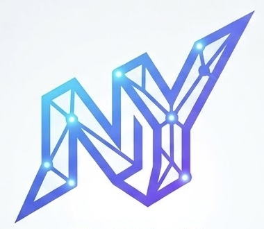

Site vitrine
Une présentation professionnelle de votre entreprise, vos services et vos points forts.

NY STUDIONous imaginons des sites vitrines modernes, clairs et efficaces pour aider les entreprises à présenter leur savoir-faire et attirer de nouveaux clients.
Design personnalisé · Adapté aux mobiles · Accompagnement direct
Un site bien conçu rassure, valorise votre activité et permet à vos futurs clients de vous trouver et de vous contacter facilement.
Une présentation professionnelle de votre entreprise, vos services et vos points forts.
Une identité visuelle cohérente, une navigation intuitive et une expérience adaptée au mobile.
Des informations essentielles bien organisées, des appels à l'action et les bases du référencement.
Quatre concepts de sites réalisés pour illustrer notre approche dans différents secteurs.
Ces réalisations sont des projets fictifs de démonstration créés par NY Studio.
Un échange direct, des étapes claires et un site conçu autour de vos objectifs.
Nous découvrons votre activité, vos besoins et vos objectifs.
Nous définissons la structure, le style et les contenus du site.
Nous développons votre site et vous le présentons pour validation.
Après validation, votre site est publié et prêt à être partagé.
Une occasion de donner à votre activité une présence professionnelle sur le web.
Profiter de l’offrePrésentez-nous votre activité et vos besoins. Nous vous répondrons pour échanger sur votre projet.
contact@nystudio.fr